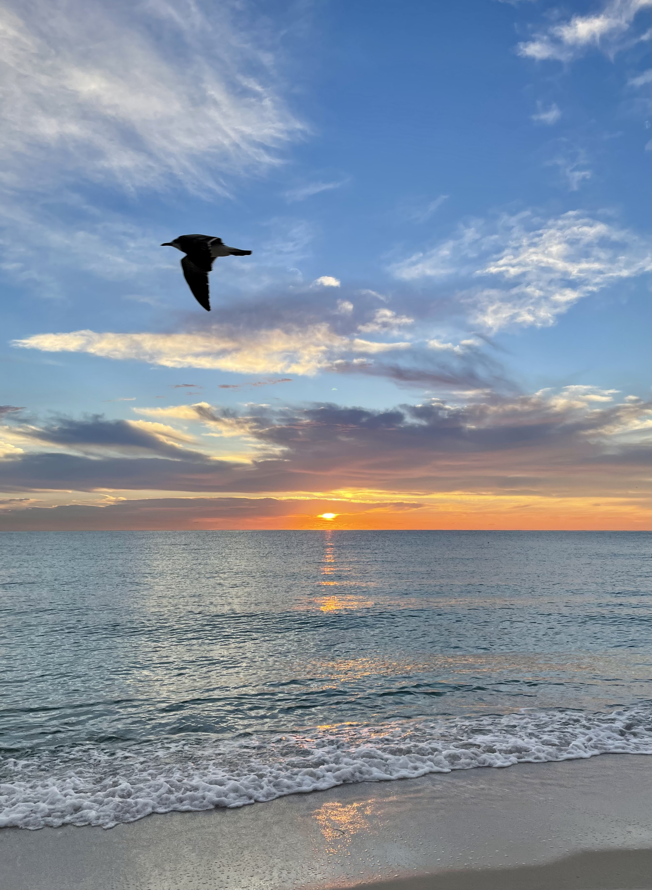
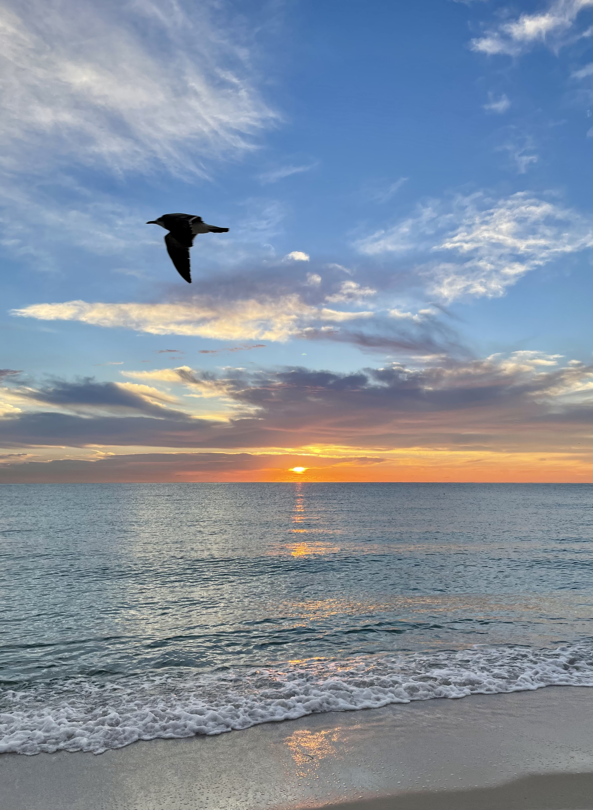

Before I went to Miami, I always thought it was just a beach city, with vast sandy beaches and beautiful east coastline. When I got there I discovered that the cityscape of Miami is also so attractive.
On the beach in Miami, I enjoyed the sunset and sunrise, feeling the passage of time and the dreamy moment of the sun reflecting on the waves. This was also my first time interacting with seagulls at such a close distance. Walking on the beach at sunset, feeling the sea breeze, walking barefoot on the soft white sand, and feeling the changes in the clouds in the sky, I love the unique comfort and nature of Miami Beach. The funny thing is, it felt like a race against time when taking photos because the sun disappeared soon after and we were trying to get the best photos while the sun was setting on us.


 



In addition to the natural sea view, I really like Miami's urban landscape, especially the Design district and the downtown area, because it is very similar to my city of Shanghai, bustling but not as crowded as New York, commercial but not indifferent. The various colorful installations and design-rich decorations in Design District add a lot of fun to shopping. The wide streets and palm trees that can be seen everywhere give the city a sense of breath. I really like to watch the sunset from a high-rise building in the city, feel the sunlight filtering through the building, and feel the layering of the city. It’s a completely different feeling than watching the sunset on the beach.


Enjoy!
- The Hemingway Home and Musuem
- The Southern Most Point
- Mallory Square
- Key West Shipwreck Museum
- Mile Marker Zero